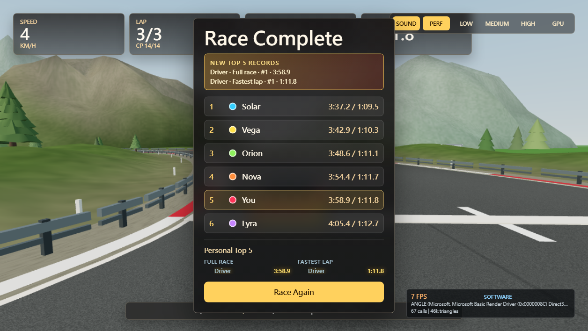
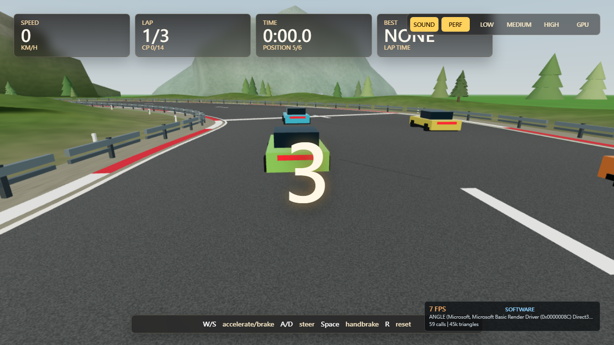
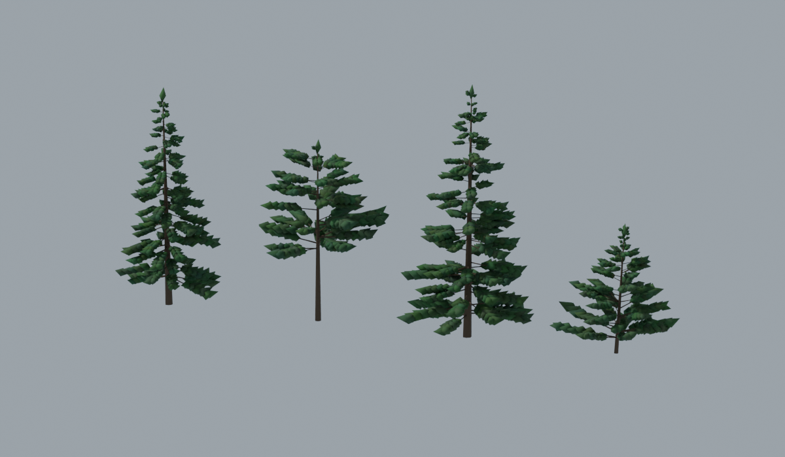

Phase 2：Blender 森林與手動 GPU
遊戲功能與靜態環境驗收通過：五組畫質對照、全圈 19 處、三圈完賽、重新開始、保存與三次資源釋放。
實體 GPU 效能仍為 BLOCKED；畫面上的 SOFTWARE FPS 不代表硬體效能。
完整驗收報告 · Console / network · 12/12 資源釋放紀錄
High 保留原基準，GPU 手動啟用 Blender 分枝樹、地面細節及遠景。配對鏡位相同，AI 與計時仍在運行。點圖片可看原尺寸。
三圈完賽與重新開始
以既有 DEV autoRace、Perf 執行功能回歸；不是 GPU 效能量測。


Blender CPU 資產預覽
資產渲染，並非遊戲畫面。四種針葉樹皆有三個 LOD。
